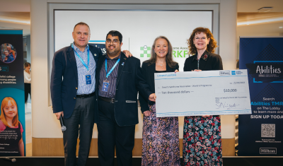

<!-- 1 Column Text + Button : BEGIN -->
<table role="presentation" cellspacing="0" cellpadding="0" border="0" width="100%" style="padding-left:12px;">
    <tr class="bg-lightblue-bg" style="padding-bottom:12px">
        <td width="6" color="#002F61" style="background-color:#002F61; width:12px"></td>
        <td class="font-main pl-3 pr-3 pb-3">
            <!--[if mso]>
            <table role="presentation" border="0" cellpadding="0" width="400" cellspacing="0" align="right" style="width:400px; height=235px"><tr><td style="padding:5px 5px 12px 12px;">
            <![endif]-->
            <span>
                
            </span>
            <!--[if mso]>
        </td></tr></table>
        <![endif]-->
        <span class="text-sm font-main leading-4.5 py-1 m-0 text-left" style="padding-bottom: 8px;">
            <p>National Disability Employment Awareness (NDEAM) is an annual observance in October to celebrate the value and talent of workers with disabilities and promote their access to good jobs.  At Hilton, the Abilities Team Member Resource Group (ATMRG) has dropped the word “National” to give recognition to the amazing work this TMRG is doing around the globe at all our corporate offices. This year’s theme, Disabilities Don’t Discriminate, was filled with a cornucopia of intersectional events.</p>
            <h3>Maple Court hosts inclusive luncheon</h3>
            <p>A true feast of gratitude was hosted by ATMRG in partnership with UK Operations, Maple Court Workplace Services, and Encore Events. The event highlighted the skills and abilities of team members from Hilton’s supported employment partners: Aurora Foxes and Mission EmployAble. A generous $10,000 donation from Hilton and American Express Global Business Travel Pacesetters (top-performing travel agents) to the Down Syndrome Association’s WorkFit program was the gravy on top.</p>
            <p>Be sure to check out the <a href="https://hilton.sharepoint.com/sites/LS_Accessibility/SitePages/Disability Employment Awareness Month 2024.aspx">Disability Employment Awareness Month 2024</a> SharePoint and <a href="https://teams.microsoft.com/l/team/19:968c2dd83f7a480e87113ca8dedd2d24%40thread.tacv2/conversations?groupId=9e676e6b-200d-4f8d-b29b-ab2add74421b&tenantId=660292d2-cfd5-4a3d-b7a7-e8f7ee458a0a">join the ATMRG</a> to learn more about their impactful work.</p>
        </span>    
    </td>
    </tr>
</table>
<!-- 1 Column Text + Button : END -->